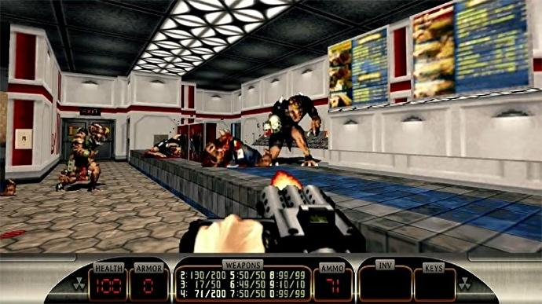
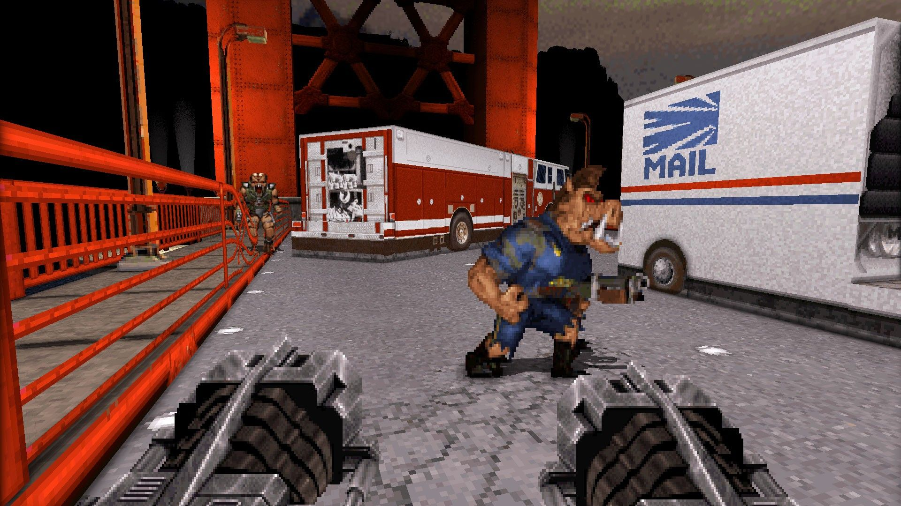

Duke Nukem 3D is one of the three games on this website that use the build engine. The build engine was a major step into the world of 3D gaming. The build engine allowed for sloped walls, better lighting, and more 3D looking set decorations. This allowed for much more dynamic maps than ever possible with DOOM.
The build engine brought recognition to almost any game built upon it, and Duke Nukem 3D was no exception. It used sectors to create sloped planes and multiple ceilings. Further more, the build engine allowed for more complex map structures. As a result, areas like vents were able to be implemented. Further more, the enviroment could be interacted. The most notable examples of this from this game were playing pinball and breaking fire hydrants.
The game itself was also a fun experince for most who have played it. While it's story was simple, it's main protagonist, Duke Nukem, was comical none the less.